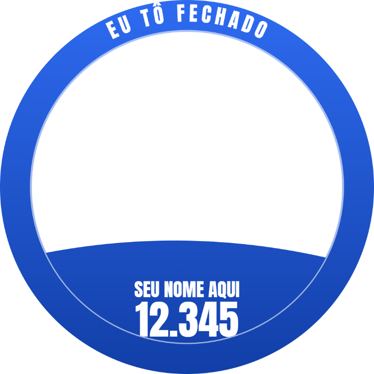
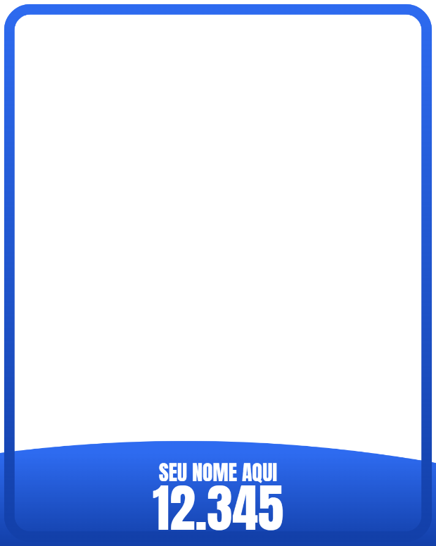

Molduras de apoio para a sua campanha. O eleitor coloca a própria foto, ajusta em segundos e publica no WhatsApp e no Instagram. Sem instalar nada, sem cadastro.
Resposta no mesmo dia. Sua campanha no ar em poucas horas.
Foto de perfil

Você cuida da campanha. A parte técnica é comigo.
A moldura da campanha em PNG. Não tem? Eu crio a partir do seu material: logo, número e slogan.
Sua campanha ganha um endereço exclusivo, tipo tofechado.com/seunome, pronto para divulgar.
Cada pessoa faz a própria imagem e publica. Sua campanha aparece na rede de cada eleitor.
O apoiador escolhe onde quer publicar e a imagem sai no tamanho certo, em alta resolução.

Feed Instagram e FacebookMe chama no WhatsApp com o nome e o número da campanha. Em poucas horas seu link está pronto para divulgar.